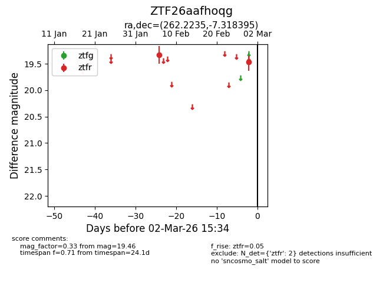
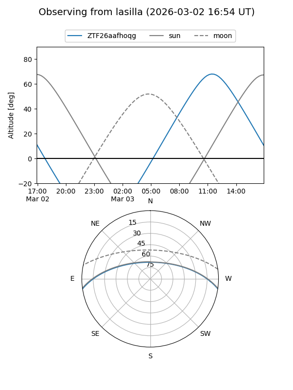
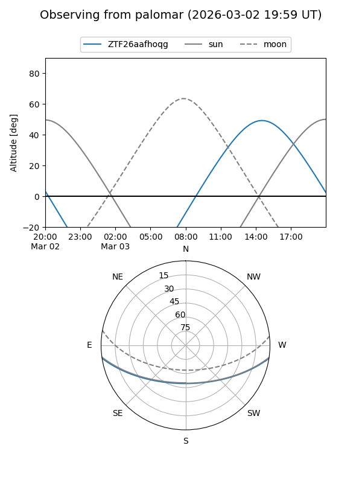

ZTF26aafhoqg
Target ZTF26aafhoqg at 2026-03-02 15:39
Aliases and brokers:
FINK: link
Lasair: link
ALeRCE: link
alt names
ZTF26aafhoqg (ztf,fink_ztf)
Coordinates:
equatorial (ra, dec) = 262.2235,-7.31840
equatorial (HMS+DMS) = 17:28:53.64,-07:19:06.22
galactic (l, b) = (16.5561,+14.65619)
Flags:
Photometry:
last ztfr=19.46
2 ztfr detections
Lightcurve

Visibility


Additional plots